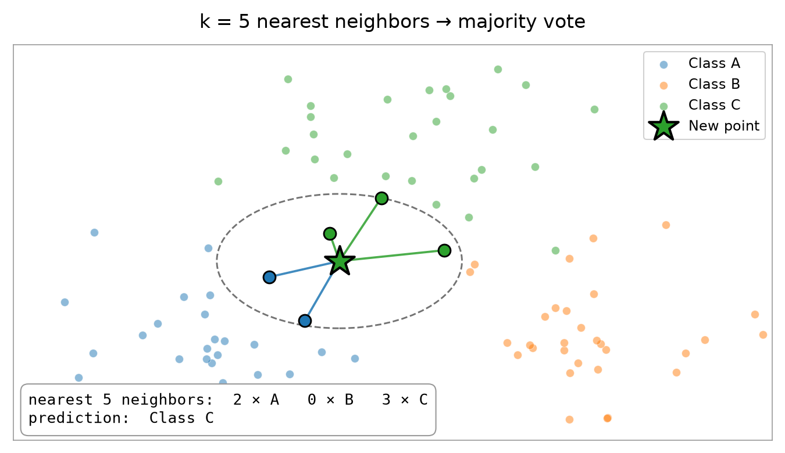
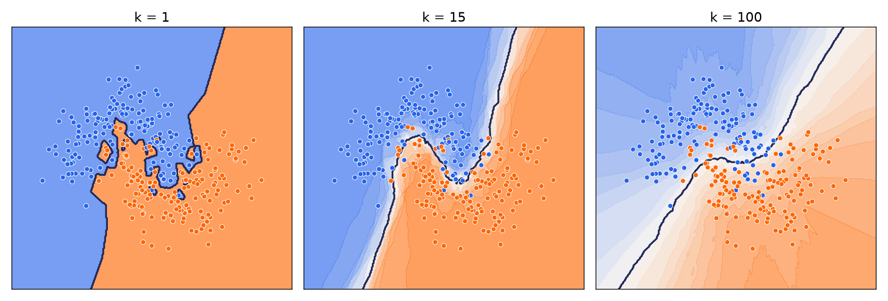
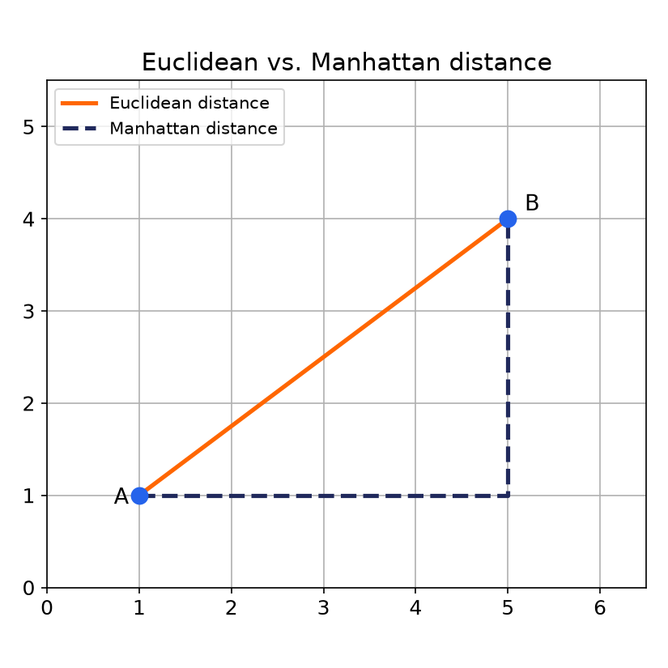
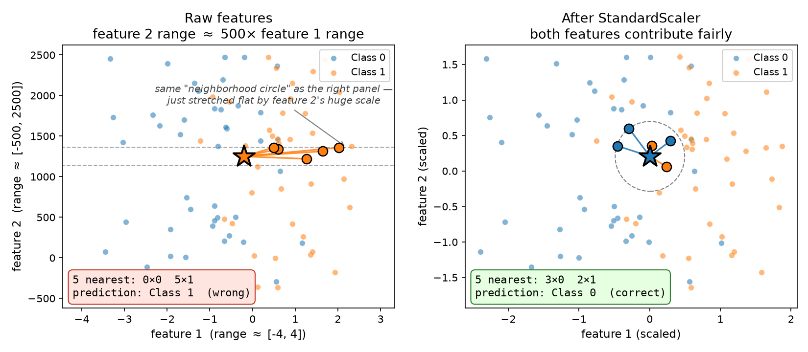

نمونههای مشابه، برچسب مشابه دارند. برای پیشبینی یک نمونهی جدید، به «همسایههای» نزدیکش در فضای ویژگیها نگاه میکنیم.
پیشبینی مبتنی بر فاصله:k نزدیکترین نمونهی آموزشی را پیدا میکنیم و برچسب اکثریت را میگیریم (رأیگیری).
همین یک تصویر کافی است
یک نمونهی جدید چطور برچسب میگیرد؟

ستاره نمونهی جدید است؛ دایرهی نقطهچین محدودهی k=5 همسایهی نزدیک را نشان میدهد. اینجا رأی ۳ به ۲ به نفع کلاس C تمام میشود. تعداد کلاسها میتواند هر عددی باشد - دو، سه، ده - منطق همیشه همین است.
تفاوت اساسی
یادگیری تنبل (Lazy Learning)
Logistic Regression
در fit واقعاً چیزی یاد میگیرد (مقادیر w و b).
predict سریع است: فقط یک محاسبهی ساده.
KNN
در fit فقط دادهی آموزشی را حفظ میکند.
تمام محاسبات در لحظهی predict انجام میشود - به همین دلیل «تنبل» نامیده میشود.
دستگیرهی پیچیدگی
k کوچک در برابر k بزرگ

k کوچک → مرز پرپیچوخم، حساس به نویز (بیشبرازش). k بزرگ → مرز صاف، ممکن است الگوی واقعی را نادیده بگیرد (کمبرازش).
فاصله چطور تعریف میشود؟
معیارهای فاصله (Distance Metrics)

Euclidean: خط مستقیم بین دو نقطه؛ پیشفرض معمول.
Manhattan: مجموع تفاوتها در هر محور جداگانه (مثل خیابانهای شطرنجی شهر).
نکتهی حیاتی
چرا مقیاسبندی برای KNN حیاتی است

همان نقطهی جدید، همان ۵ همسایهی نزدیک - ولی بدون مقیاسبندی (نمودار سمت چپ) محدودهی ویژگی ۲ آنقدر بزرگ است که «دایرهی همسایگی» کاملاً صاف میشود و همسایهها فقط بر اساس ویژگی ۲ انتخاب میشوند؛ ویژگی ۱ عملاً نادیده گرفته میشود و پیشبینی اشتباه از آب درمیآید. بعد از StandardScaler (نمودار سمت راست) هر دو ویژگی سهم منصفانه دارند و پیشبینی درست میشود.
راهحل استاندارد
StandardScaler همیشه قبل از KNN
Raw features
→
StandardScaler
→
KNN
→
Prediction
همانطور که در نمودار قبل دیدیم، بدون این قدم پیشبینی میتواند اشتباه از آب دربیاید. پس این دو مرحله را همیشه با هم و به همین ترتیب به کار میبریم - هیچوقت KNN را روی دادهی خام تنها نمیگذاریم.
هیچ معادلهای یاد نگرفتیم؛ فقط بر اساس شباهت رأی گرفتیم.
قدم بعدی: حالا دو مدل کاملاً متفاوت داریم. کدامشان را باید انتخاب کنیم؟